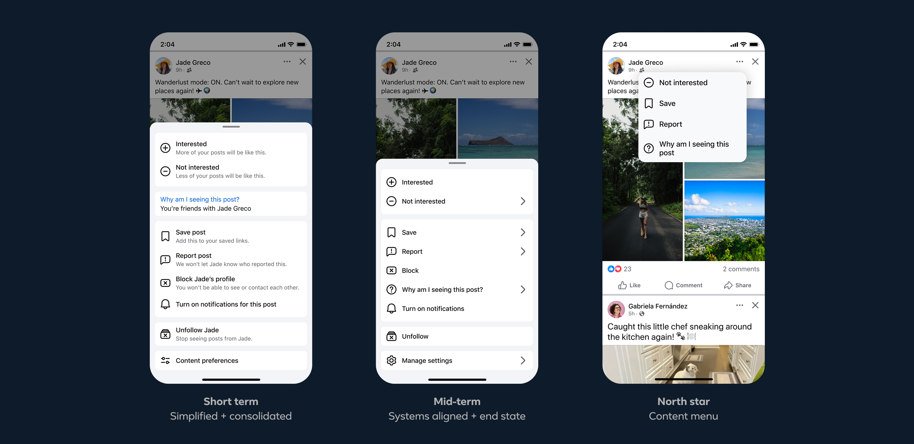
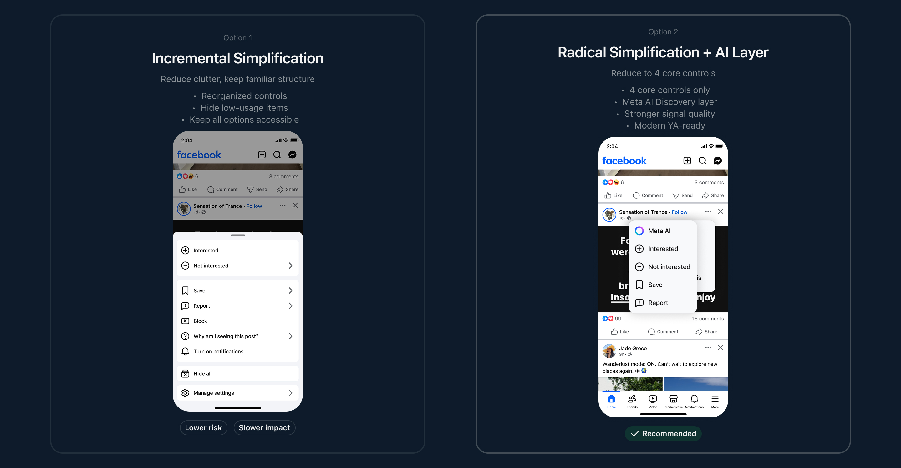
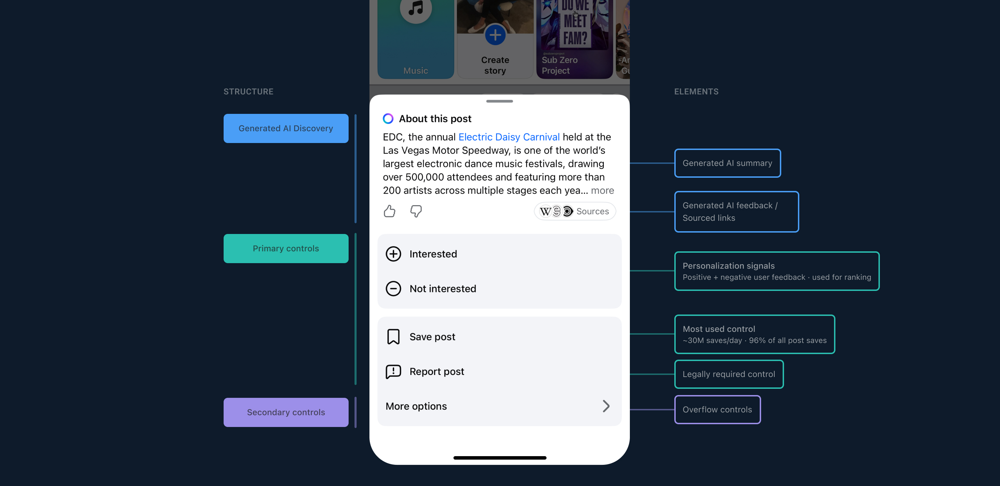
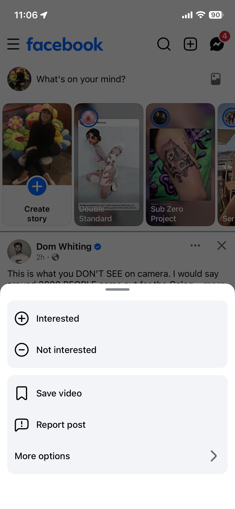
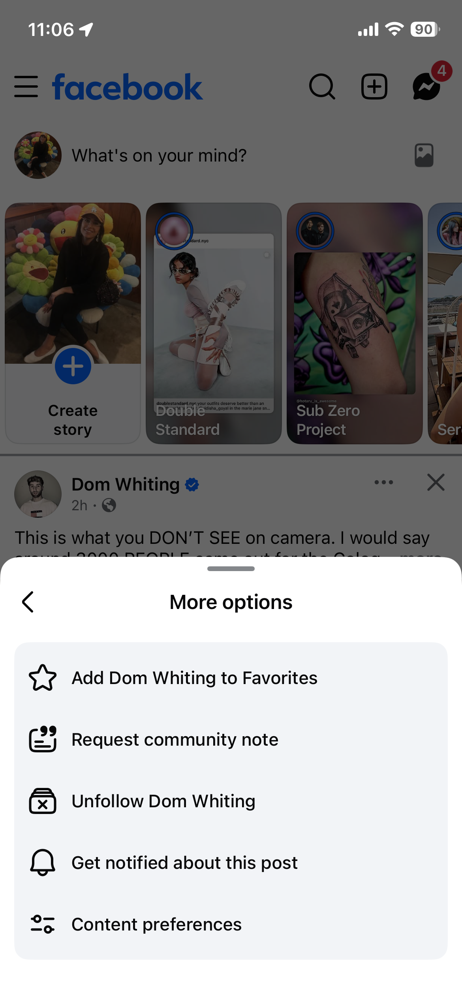
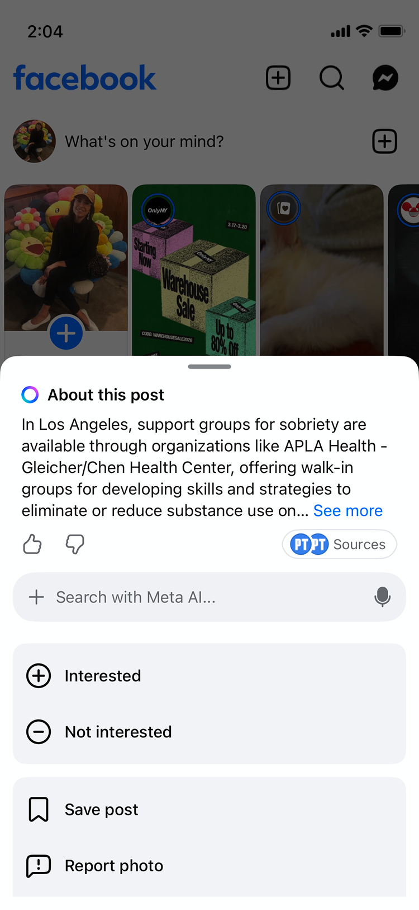
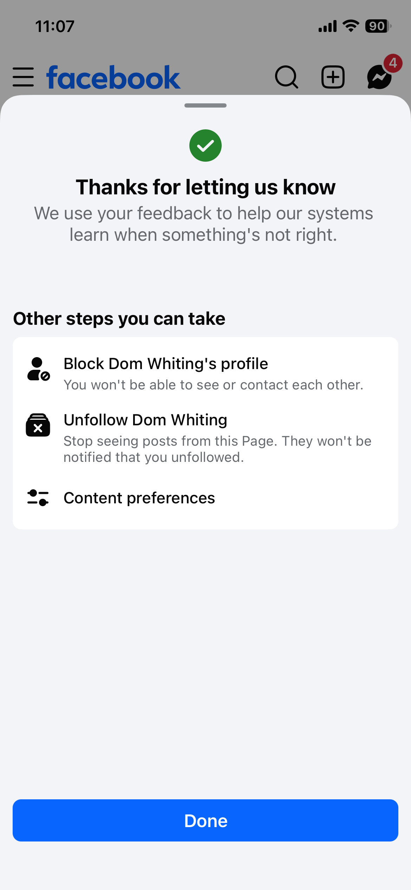

Stalled for four years. Shipped in 4 months.

The 3-dot menu is how people control their own Facebook experience: what they see, save, hide, or report. Over time it became a junk drawer. Every team that touched Feed added a control and no one would give theirs up, so it grew to roughly 14 options: redundant, inconsistent across surfaces, none prioritized. UXR was blunt, 44% of the words people used to describe it were negative: confusing, overwhelming, pushy.
It wasn't cosmetic. Decision fatigue meant people disengaged from the controls entirely, the noise hurt ranking signals, and competitors like LinkedIn, X, Threads, and Instagram had already moved toward fewer, clearer controls. Three separate efforts had tried to fix it and stalled, not on design, but on alignment.
Before a pixel moved, I framed two strategic options for leadership, incremental cleanup versus a bold new model, with honest tradeoffs and a clear recommendation: the bold path, despite the risk. That pitch set four design principles that guided every decision after it:
Then I led with data, not design. With my tech lead, I built risk assessments, impact analyses, and ranking-signal projections, and showed each team exactly how the change would move their numbers. Not “this is cleaner for users,” but “here is what this means for your signals.”

Every control faced three questions: is it legally required, is it actually used (last 30 days of click-through), and does it have a better home elsewhere? What survived was clear: Interested / Not Interested, Save, Why Am I Seeing This, and Report. Nothing else was deleted, it was rehomed, mapped on a control matrix so nothing vanished without another entry point.





Mid-process, a new ask came down from the very top: Meta AI needed to live in the 3-dot menu, a direct request from Mark Zuckerberg. It was the opposite of everything I'd been fighting for, more surface, more complexity, more negotiation. So I had a choice: push back and lose, or adapt without giving up the core goals.
I adapted. I co-designed an AI Discovery Layer with a Discovery designer, a Meta AI summary, account transparency, a one-tap prompt entry, and ranked media actions, working closely with the Discovery, Feed, and Search teams to fit it in without unwinding the consolidation. On the UI I held the line: icon consistency, color-token alignment, secondary strings cut, only primary labels kept. What launched wasn't far from what I first pitched.
The design was never the hard part, three teams had already proven a cleaner menu was possible. The unlock wasn't a design decision; it was changing the conversation, from design rationale to data, risk, and business impact, and building the artifact that made the bold version feel like the safe one. Working alongside my engineering partner was the most meaningful collaboration of my time at Meta: two people moving something an entire org couldn't for four years.